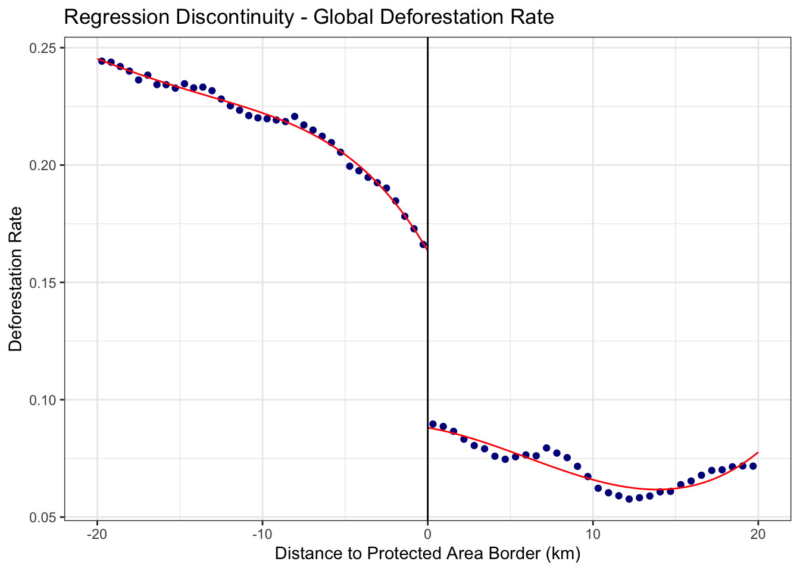
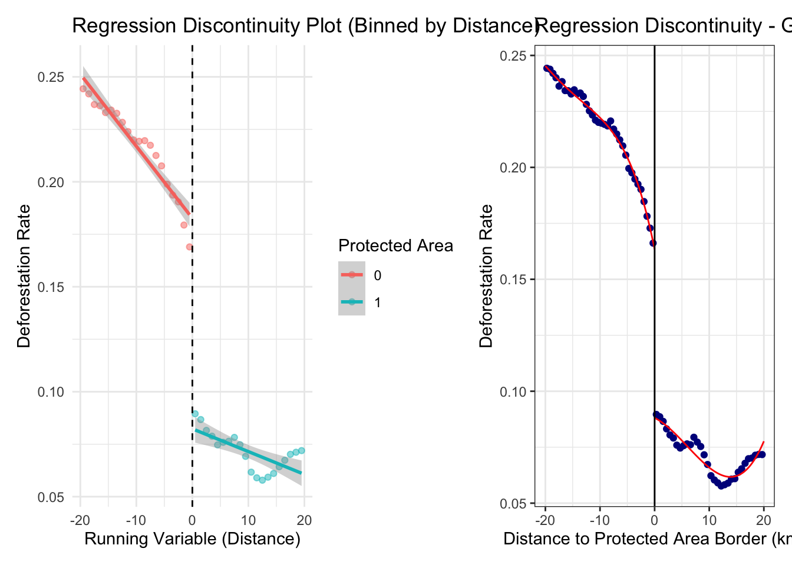
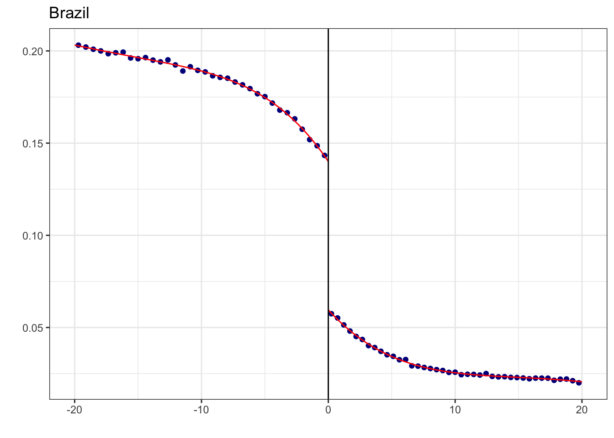

library(tidyverse)
library(rdrobust)
library(here)
library(jtools)
library(janitor)
library(patchwork)
library(gt)RDD Review
Regression Discontinuity Design is a experimental method used to estimate the causal effects of a treatment by exploiting a “cutoff” or “threshold” in an assignment variable.
The assignmnet variable (\(X\)): A continuous measure (e.g., \(NO_2\) levels, age, or distance) used to determine treatment eligibility.
The Cutoff (\(c\)): The specific value of the running variable where the treatment status changes abruptly.
The causal effect is identified by the “jump” or “discontinuity” in the outcome variable at the cutoff point.
Study Review: “Environmental Regulation and Economic Performance: Evidence from Forest Conservation in Mexico”
This lab uses open-access replication data from:
This lab replicates the analysis from Neal (2024), which examines how effective government-protected forest areas are at preventing deforestation globally from 2000-2022. Using satellite data covering 7.4 billion forest observations and a regression discontinuity design, the study addresses a critical policy question:
Does legal protection actually prevent forests from being cleared?
The Selection Bias Problem
Governments don’t randomly assign protection. They typically protect forests that are already less likely to be cleared—remote areas, steep terrain, or poor soil quality. Simply comparing deforestation rates inside versus outside protected areas would be misleading.
The RDD Solution
By comparing forests immediately on either side of protected area boundaries (within ~1.5km), the study isolates the causal effect of legal protection. Two forests 50 meters apart on opposite sides of a boundary are virtually identical except for protection status.
The Findings
Protected areas are only about 30% effective on average at preventing deforestation—a discouragingly low figure that varies dramatically across countries. While some nations like New Zealand (89% effective), Finland (77%), and Canada (63%) show high effectiveness, many countries with critical biodiversity have essentially ineffective protection: Indonesia (11%), the Democratic Republic of Congo (4%), Bolivia (4%), and Venezuela (0%).
Study Replication
Using Simulated_Deforestation_Data5.csv, we will replicate Neal’s approach.
0. Load packages + study data
Read in the simulated data
sim_data <- read_csv(here("week4", "Simulated_Deforestation_Data5.csv"), show_col_types = FALSE)1. Create variable description table for key variables in the analysis
| Variable Descriptions (Treatment, Outcome, and RDD Covariates) | |
| Replication of Neal (2024) Forest Protection Study | |
| Variable Name | Definition |
|---|---|
| protected (Treatment) | Site is inside a Protected Area (1 = inside, 0 = outside) |
| deforest (Outcome) | Annual rate of forest loss (0 to 1) detected via satellite imagery. |
| distance (Running Variable) | The shortest distance (in km) from the forest pixel to the nearest protected area boundary. Negative = Outside, Positive = Inside. |
| slope | Steepness of the terrain. |
| road_proximity | Distance to the nearest road (km). |
| water_proximity | Distance to the nearest water source (km). |
| soil_nutrition | Categorical scale (0-2) of soil quality for agriculture. |
| country | The nation where the forest plot is located. |
| slope_cat | Binary indicator for high slope vs. low slope for stratified analysis. |
| road_cat | Binary indicator for proximity to roads (Near vs. Far). |
| soil_cat | Binary indicator for high fertility vs. low fertility soil. |
2. Visualize the discontinuity using binned means (bin size = 1)
data_binned <- sim_data %>%
mutate(distance_bin = cut(distance, breaks = seq(-20, 20, by = 1), include.lowest = TRUE)) %>%
group_by(distance_bin, protected) %>%
summarize(
avg_distance = mean(distance), # Averaged binned distance
avg_deforest = mean(deforest),
.groups = "drop"
)3. Plot using binned data
rdd_lm <- ggplot(data_binned, aes(x = avg_distance, y = avg_deforest, color = as.factor(protected))) +
geom_point(alpha = 0.5) +
geom_smooth(method = "lm", aes(group = protected), se = TRUE) +
geom_vline(xintercept = 0, linetype = "dashed", color = "black") +
labs(title = "Regression Discontinuity Plot (Binned by Distance)",
x = "Running Variable (Distance)", y = "Deforestation Rate",
color = "Protected Area") +
theme_minimal()
rdd_lm
TipComprehension Check
Interpret the plot above. What are the two lines representing and what do their trends reveal? Explain what the positive and negative values mean here (refer to the variable description for distance if you are unsure!).
What would it mean if there were NO discontinuity at distance = 0? How would that change your interpretation of protected area effectiveness?
4. Run RDD Analysis using OLS
rdd_ols <- lm(
deforest ~ # outcome
protected + # treatment effect
distance + # running variable
protected*distance + # allows slope to vary
slope_cat + road_cat + water_cat + soil_cat, # <<< CONTROLS
data = sim_data)
# Display summary of regression results
summ(rdd_ols, digits = 3,
model.info = FALSE, model.fit = FALSE)| Est. | S.E. | t val. | p | |
|---|---|---|---|---|
| (Intercept) | 0.298 | 0.001 | 475.575 | 0.000 |
| protected | -0.094 | 0.000 | -253.637 | 0.000 |
| distance | -0.002 | 0.000 | -101.864 | 0.000 |
| slope_cat | 0.019 | 0.000 | 103.900 | 0.000 |
| road_cat | -0.104 | 0.000 | -526.436 | 0.000 |
| water_cat | 0.013 | 0.001 | 23.983 | 0.000 |
| soil_cat | -0.018 | 0.000 | -87.815 | 0.000 |
| protected:distance | -0.002 | 0.000 | -68.857 | 0.000 |
| Standard errors: OLS |
TipComprehension Check
Based on the regression results, what is the estimated causal effect of protected area status on deforestation? Does this match what you see in the plot?
4. Estimate & Visualize RDD using {rdrobust}
RDD Robust Estimation Method (local polynomial regression):
Local polynomial regression is a method used to give more weight to observations near a specific point— in this case, the RDD threshold. Instead of using OLS, it fits separate non-linear regressions on either side of the cutoff using a subset of the data near the cutoff (i.e., bandwidth).
Interpreting output:
Default estimation options used by the rdrobust() function:
Bandwidth Optimization (BW type: mserd): Bandwidth is optimized to balance accuracy & bias.
Bandwidth Estimate (BW est. (h) = 5.729): The estimated range around the cutoff used to subset the data to estimate the treatment effect.
Kernel (Triangular): Gives higher weight to data points close to the cutoff.
Variance Estimation (VCE method: NN): Instead of assuming equal variance across all observations, the error estimates are adjusted to account for variability near the cutoff.
Take a random sample (To adjust for memory-limit & speed)
global_samp <- sim_data %>%
sample_n(size = nrow(sim_data) * 1.0) # <<< e.g., .5 for 50%5. Estimate Global RDD
global_rdd <- rdrobust(
y = global_samp$deforest, # Outcome
x = global_samp$distance, # Running variable
covs = global_samp %>% select(slope_cat, road_cat, water_cat, soil_cat), # Controls
c = 0, # Cutoff at 0 (protected area boundary)
kernel = "triangular"
)
# Print summary of results
summary(global_rdd)Covariate-adjusted Sharp RD estimates using local polynomial regression.
Number of Obs. 600000
BW type mserd
Kernel Triangular
VCE method NN
Number of Obs. 299889 300111
Eff. Number of Obs. 85646 86071
Order est. (p) 1 1
Order bias (q) 2 2
BW est. (h) 5.729 5.729
BW bias (b) 9.034 9.034
rho (h/b) 0.634 0.634
Unique Obs. 299889 300111
=====================================================================
Point Robust Inference
Estimate z P>|z| [ 95% C.I. ]
---------------------------------------------------------------------
RD Effect -0.092 -99.939 0.000 [-0.094 , -0.090]
=====================================================================
TipComprehension Check
The RD Effect here is -0.092, while in the previous regression table the ‘protected’ coefficient was -0.094. Why are they similar but not exactly the same? Which one should we trust more?
What advantages does this ‘local polynomial regression’ approach have over the simple linear regression we saw before?
6. Visualize the RDD discontinuity using rdplot():
This plot presents the local polynomial regression curves fit on either side of the cutoff.
rdd_poly <- rdplot(
y = sim_data$deforest,
x = sim_data$distance,
c = 0,
binselect = "es",
title = "Regression Discontinuity - Global Deforestation Rate",
x.label = "Distance to Protected Area Border (km)",
y.label = "Deforestation Rate"
)
rdd_polyCall: rdplot
Number of Obs. 600000
Kernel Uniform
Number of Obs. 299889 300111
Eff. Number of Obs. 299889 300111
Order poly. fit (p) 4 4
BW poly. fit (h) 20.000 20.000
Number of bins scale 1.000 1.000Let’s look at our results side by side.
rdd_lm + rdd_poly$rdplot 
TipComprehension Check
Compare the two plots. What key differences do you notice between the left plot (binned linear) and the right plot (local polynomial)? Which one better captures the pattern in the data?
7. Estimate separate RDD models by country using a loop function 🔄
TipWhat is an iterator or loop function?
lapply() loops across the input levels for country and applies the function run_country_rdd
run_country_rdd <- function(country_name) {
df_country <- sim_data %>% filter(country == country_name)
rdd_model <- rdrobust(
y = df_country$deforest,
x = df_country$distance,
covs = df_country %>% select(slope_cat, road_cat, water_cat, soil_cat),
c = 0,
p = 1,
kernel = "triangular"
)
}
# Apply the function to all countries
rdd_6country <- lapply(unique(sim_data$country), run_country_rdd)
# Print summary for `DRC`
summary(rdd_6country[[3]]) Covariate-adjusted Sharp RD estimates using local polynomial regression.
Number of Obs. 100000
BW type mserd
Kernel Triangular
VCE method NN
Number of Obs. 50031 49969
Eff. Number of Obs. 15992 16021
Order est. (p) 1 1
Order bias (q) 2 2
BW est. (h) 6.369 6.369
BW bias (b) 11.882 11.882
rho (h/b) 0.536 0.536
Unique Obs. 50031 49969
=====================================================================
Point Robust Inference
Estimate z P>|z| [ 95% C.I. ]
---------------------------------------------------------------------
RD Effect 0.001 1.049 0.294 [-0.001 , 0.005]
=====================================================================8. Generate county level discontinuity plots
# Create list to store plots
plot_list <- list()
# Loop across 6 countries and plot
for (country_name in unique(sim_data$country)) {
df_country <- sim_data %>% filter(country == country_name)
p <- rdplot(
y = df_country$deforest,
x = df_country$distance,
c = 0,
binselect = "es",
title = paste(country_name),
x.label="", y.label = "")
p <- p$rdplot +
labs(x=" ",y="")
plot_list[[country_name]] <- p # Store each plot in the list
}


9. Print combined RDD Plots by country
final_plot <- wrap_plots(plot_list) +
plot_layout(ncol = 2) +
plot_annotation(
title = "Deforestation Rate",
caption = "Source: Simulation Data"
)
final_plot
TipComprehension Check
How do the results of these countries compare with the results from Neal 2024?